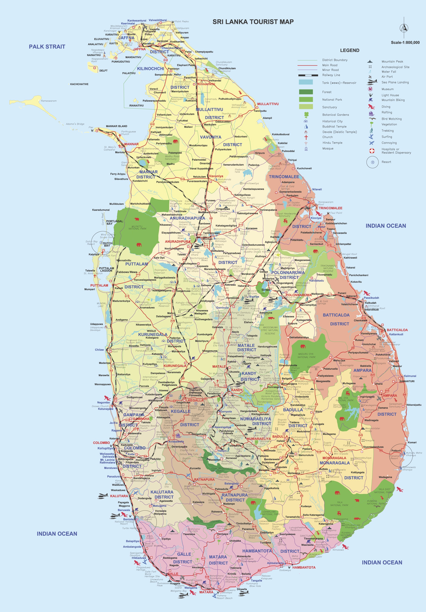

A comprehensive map of Sri Lanka’s road systems, historical and religious sites, forests and Wildlife sanctuaries, harbors and diving sites, a guide to explore the country, find your way around or guide to simply to get lost amidst the splendor and beauty of the country.
